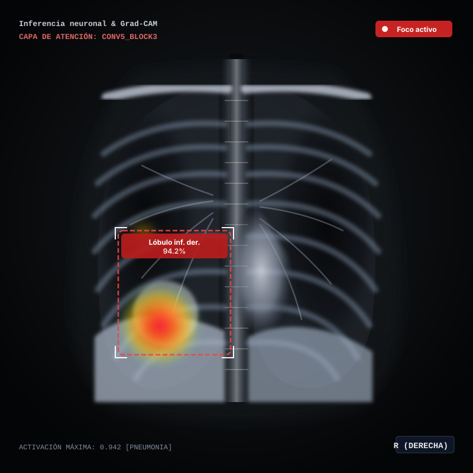

Estación de Trabajo Radiológica


Lóbulo inf. der. (94.2%)
PX-0142 | CXR PA DIGITAL
kVp: 120 | mA: 4.5 | ms: 12
ESTUDIO: AN-9842
HOSPITAL CENTRAL - SALA 6
W: 1500 L: -600 (PULMONAR)
ZOOM: 100%
PNEUMONET-v4.2 CAD-e
GRAD-CAM ACTIVO